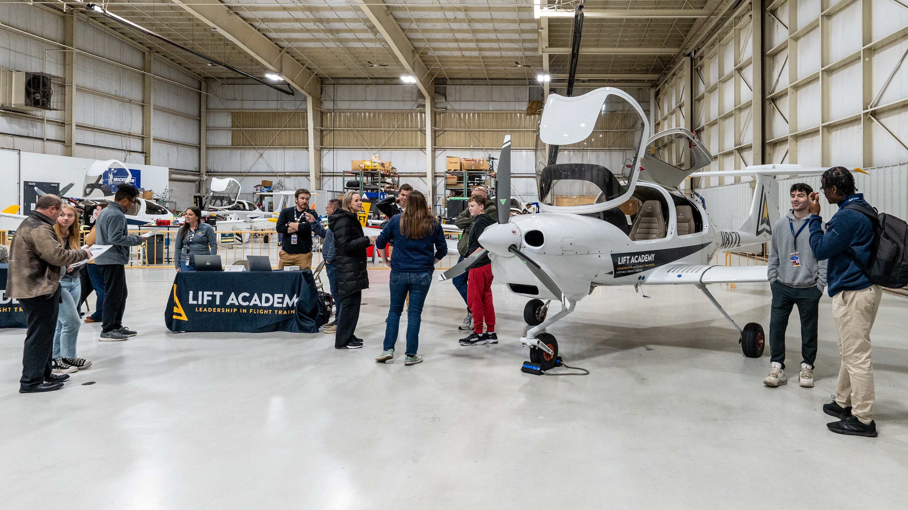
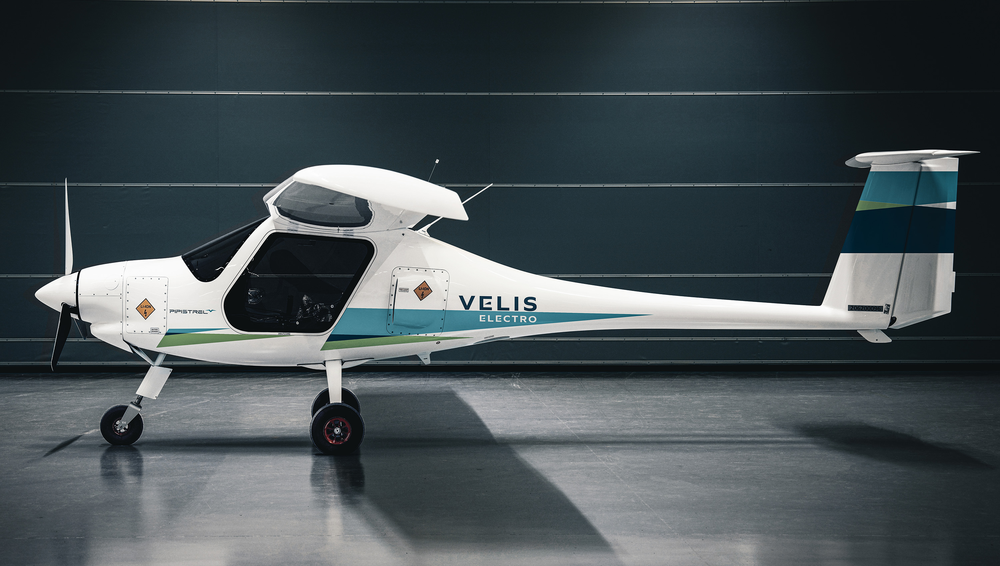
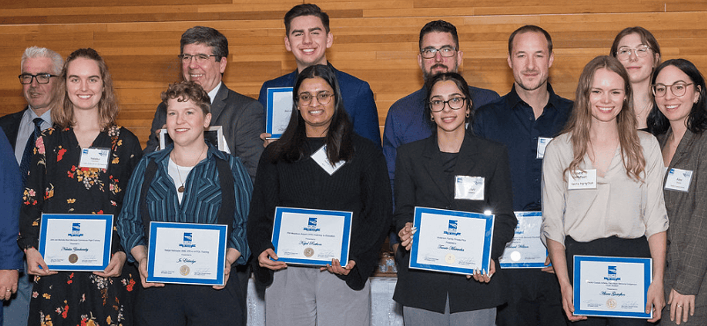
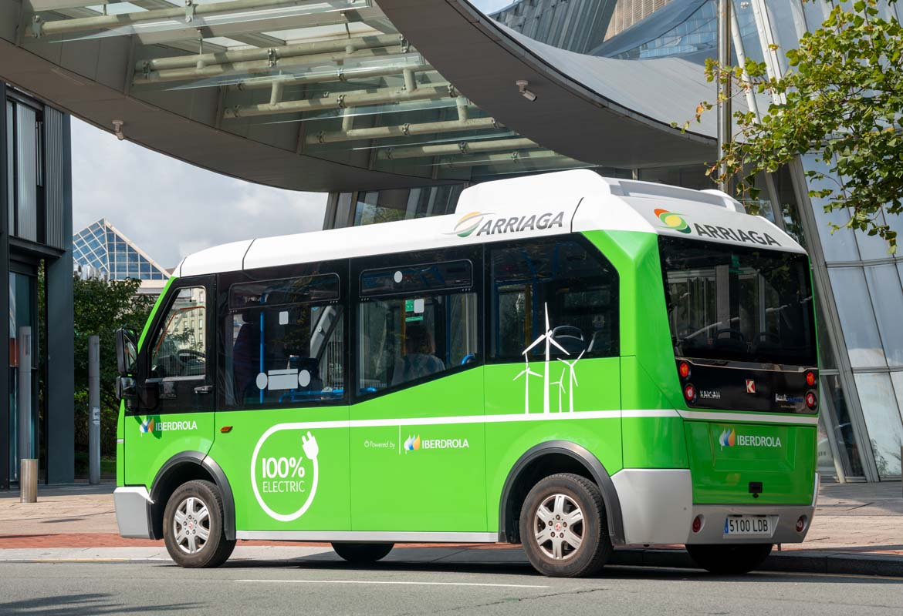

Business Case
Executive Summary
Our group proposes the UFV Aerospace & Flight Innovation Centre to make flight training more financially affordable and accessible to students. Currently, UFV aviation students depend on external flight schools, where training can cost $80,000 to $100,000 or more. Travelling between the university and flight training facilities adds more expenses and makes scheduling more difficult.
Our proposed centre would connect UFV’s King Road campus with Abbotsford International Airport. The project has a total budget of $100 million, with $96.5 million allocated to project expenses and $3.5 million held in reserve. Our goal is to provide students with better access to flight training, modern equipment, and financial support.
Constructing the facilities is only part of the challenge. We must also make sure that the centre can cover its operating expenses and continue supporting students in the long term. If managed well, the project could strengthen aviation education at UFV and create more opportunities for students pursuing aviation careers in nearby aviation schools.
Business Problem and Opportunity
The main opportunity is to give UFV greater control over its flight training and its associated costs. By managing our own training facilities, we could coordinate aircraft availability, instructor schedules, and simulator sessions more effectively.
However, these benefits depend on how well we manage the centre. Underused aircraft, low student enrolment, and unexpected maintenance expenses could reduce our expected savings.
Our project also introduces electric aircraft into flight training. These aircraft could reduce emissions during training, although their usefulness will depend on battery range, charging infrastructure, and suitability for different training requirements.
Financial Analysis
Our project has a total budget of $100 million, including $96.5 million for planned expenses and $3.5 million in reserve. The largest allocations are $28 million for airport facilities and $25 million for the aircraft fleet, together representing more than half of the planned spending.
Purchasing aircraft and constructing facilities will not cover the cost of operating them. We must also account for instructor salaries, maintenance, insurance, fuel, utilities, and future aircraft replacement. These recurring expenses will determine whether the centre can remain financially sustainable.
Our proposed $10 million student bursary endowment could generate approximately $400,000 annually at a 4% return. However, this income alone does not guarantee a 40% reduction in student flight fees. We must estimate enrolment, training hours, operating costs, and other revenue before confirming that target.
We recommend completing a detailed financial forecast with appropriate financial expertise before committing the full investment. This will help us determine whether the centre can maintain affordable fees while covering its long-term operating costs.
Implementation Plan and Recommendation
We plan to divide the project into stages, beginning with airport lease approval, environmental assessments, and aircraft procurement agreements. Construction and campus renovations will follow once the necessary approvals and funding are confirmed. This staged approach will help us identify major problems before committing the full budget.
Our target is to complete the project by May 1, 2030, allowing time to test the facilities and training systems before the Fall 2030 term. We will monitor spending, construction progress, aircraft deliveries, and safety approvals to identify potential delays early and take corrective action.
Scope
How we are deploying $96.5 Million across the UFV Campus and
Abbotsford International Airport (YXX) by May 1,2030 with $3.5 Million
returned to reserve.
Currently, UFV’s BBA in Aviation relies on third-party flight schools
1,
which cost students $80,000-$100,000 or more in flight training fees
2,3
plus commuting costs to disconnected facilities. The UFV Aerospace &
Flight Innovation Centre removes this obstacle. Our project creates a
connected, university-owned aviation system on two campuses. It
consists of on-campus simulators, a hangar at the Abbotsford
International Airport (YXX), a fleet of 25 aircraft, and a permanent $10M
student scholarship fund.
- 42 Months: Target Launch on May 1,2030 (Ready for the Fall 2030
for a test run)
- $96.5M Target Spend: $3.5M as a reserve
- -40% Flight fees: Permanent cost reduction for UFV students2,3
- 25 Planes + 3 Sims: Modern fleet including zero-emission electric
trainers
What We Are Building
Every dollar of our $96.5M capital plan is locked to six concrete, measurable work packages:

YXX Airport Campus & Hangar ($28.0M)
Location: Abbotsford International Airport (YXX Tarmac)
What’s Included: A 50-year municipal tarmac ground lease
4 and
turnkey construction of a 45,000 sq. ft. LEED-Gold Aviation
Complex
5.
Includes climate-controlled hangar bays
6 high-voltage
electric aircraft fast-chargers
certified maintenance workshops
4
smart classrooms,
flight dispatch
UFV Student Lounge.

Next-Gen Sustainable Fleet ($25.0M)
Capacity: 25 Factory-New Training Aircraft
What’s Included:
15x Cessna 172S Skyhawks (Garmin G1000 NXi glass cockpits)
for primary flight training
6.
5x Diamond DA42-VI Twin Stars for commercial multi-engine IFR
ratings
7
5x Pipistrel Velis Electro zero-emission electric trainers + spare
battery packs and tooling
8,9.
Staffing, Licensing & Boeing MOU ($14.0M)
Team Size: 38 38 Full-Time Aviation & Support Staff
What’s Included:
Full Transport Canada Approved Training
Organisation (ATO) certification
An academic research & pilot
pipeline partnership with Boeing (Everett, WA & Vancouver)
3 years of funded onboarding for 1 Chief Flight Instructor, 20 Flight Instructors, 6 Aircraft Maintenance Engineers (AMEs), and support
staff10,11.

King Road Simulator & CIS Wing ($12.0M)
Location: UFV Main Campus (Abbotsford)
What’s Included:
Structural and acoustic renovation of a
dedicated main-campus wing housing 3 CAE/Frasca Level-D Full
Motion Simulators
15 VR flight training bays, an Air Traffic
Control (ATC) radar lab
CIS Aerospace Telemetry Lab
where students log hours without leaving campus
12.

Student Flight Bursary Endowment ($10.0M)
Impact: $400,000/Year in Perpetual Student Funding
13
What’s Included:
A $10M invested endowment (4% annual yield11)
that cuts BBA Aviation student flight costs by ~40%
funds
Indigenous youth aviation scholarships in partnership with the
Stó:lō Nation
subsidises $25 Discovery Flights for any UFV
student.

CIS FlightOps ERP & Electric Shuttles ($4.0M)
Connectivity: 10-Minute Campus-to-Tarmac Loop
13
What’s Included:
Agile development of the custom UFV
FlightOps Software Suite (automated aircraft scheduling,
maintenance tracking
weather telemetry built with paid CIS
co-op students) plus 2 dedicated Electric Shuttle Buses running
every 20 minutes between UFV King Road and YXX.
Not In Scope
- No Runway on King Road Main Campus: All live takeoffs and
landings happen on existing YXX runways. Main campus is only for
simulators, VR and ground school14
- No Private Land Purchases: Ground Lease is the better choice
after comparing prices
- No Commercial Passenger Airline Operations: Strictly certified for
collegiate flight instruction, research, and student discovery flights - No Heavy Jets or Military Aircraft: Fleet is capped at single engine,
light twin-engine, and electric trainers suited for commercial
licensing
- No Post-2030 Operating Subsidies: Once the project starts on May
1,2030 , ongoing operations are 100% self-funded via student fight
tuition, simulator rentals, and the $10M endowment yield
Project Kill Points
The UFV Aerospace & Flight Innovation Centre will use four major kill points to review
progress before committing further funding or moving into the next stage. These reviews
allow the project to continue, be revised, be paused, or be cancelled if it is no longer
achievable.
Kill Point 1: Airport Lease and Approval Feasibility - May 2027
Before proceeding on with the project and doing the next step, the team must secure the
proposed 50-year airport ground lease and approvals for the YXX facility.
Requirements:
• Secure the proposed 50-year ground lease at Abbotsford International Airport and
necessary municipal approval.
• Secure sponsors, stakeholders, and partnerships for the project.
• Confirm that the project can accommodate the proposed hangar, classrooms,
maintenance facilities, and aircraft operations.
• Approval of pathways/runways for the centres flight training activities
• Confirm that the proposed project can be delivered within the $100 million funding
limit.
Reasons to pause or cancel: If the lease approvals or partnerships are denied, the
location is improper, or the financial budget cannot support operations, the team must
revise the proposal and come up with an alternative for the sponsors and decision makers.
If no acceptable solution is available, Kevin, stakeholders, and partners in the project will
consider cancelling the project.
Kill Point 2: Environmental Approval and Supplier Agreements - November 2027
This point in the project determines whether the project is ready to proceed with its
approved design and procurement arrangements. Before starting major construction:
review detailed designs, supplier quotations, aircraft and simulator suitability, delivery
commitments and timelines, and cost estimates.
Requirements:
• Complete the required environmental and site reviews and address any concerns
identified with decision makers and stakeholders.
• Confirm the required approvals for the next stage of development.
• Confirm agreements for the 25 training aircrafts and three simulators, including
specifications, prices, delivery commitments, timelines, and support
arrangements.
• Confirm that deliverables will support installation, inspection, and testing before
the planned May 1, 2030 handover of the completed project.
• Review the status of the proposed Boeing research and career-development
agreement and identify any activities that depend on it.
Reasons to pause or revise: The project will be paused if approvals are denied, major
concerns remain unresolved, or if stakeholders/suppliers cannot meet requirements. If the
Boeing agreement is not secured, the team will revise the partnership-dependent activities
and benefits. Its absence will not automatically cancel the core flight-training centre.
Kill Point 3: Construction Progression & Readiness Review - June 2028
This point in the project determines whether all things necessary for further construction is
approved and the project process is flowing good within the approved budget. The team
will also check if progress matches the plans and if we’re on schedule.
Requirements:
• Review designs, construction bids and quotes, permits, and the proposed
construction schedule.
• Review progress of construction. If problems arise, meet with project leaders and
authorities to discuss uncertainties.
• Compare airport-facility costs with the $28 million allocation and determine
finances.
• Update the total project cost forecast, including remaining equipment purchases,
staffing, software, and other things needed for the site.
• Confirm that any budget or scope changes have received approval through the
decision makers.
Reasons to pause or cancel: Following the charter’s proposed threshold, construction
bids exceeding the $28 million allocation by more than 12% (above $31.36 million) will
result in a pause and formal review by the team and higher ups. Smaller overruns must still
follow the change-control process. If problems arise during progression, the team will
consider design adjustments, supplier negotiations, or approved reallocations. If the
project cannot remain within the $100 million limit or meet the final deadline, cancellation
or a scope revision will be considered.
Kill Point 4: Safety and Operational Readiness - February 2030
This final point in the project will determine whether the centre is ready to enter its planned
operational testing stage before handover. The team will review approvals and instructions
related to aviation, simulations, inspections, requirements, courses, and other daily
operations of the centre.
Requirements to proceed:
• Obtain the applicable Transport Canada approvals for the activities being
undertaken.
• Complete required aircraft inspections, simulator acceptance checks, and facility
inspections.
• Confirm that instructors, maintenance engineers, and support staff are qualified
and prepared for their assigned duties.
• Test FlightOps scheduling and maintenance tracking, emergency procedures, and
supporting services.
• Resolve any safety defects before any affected flight activity begins.
Reasons to pause: Project will be paused if required approvals are missing, essential
systems fail testing, or safety concerns remain unresolved. The team must correct the
deficiencies and obtain the appropriate authorization before proceeding. Kevin’s funding
approval cannot replace regulatory approval. If this affects the completion handover date,
a meeting will need to be held with the team and higher ups.